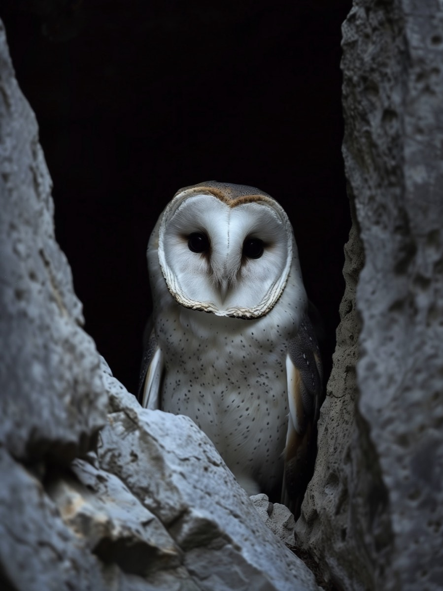
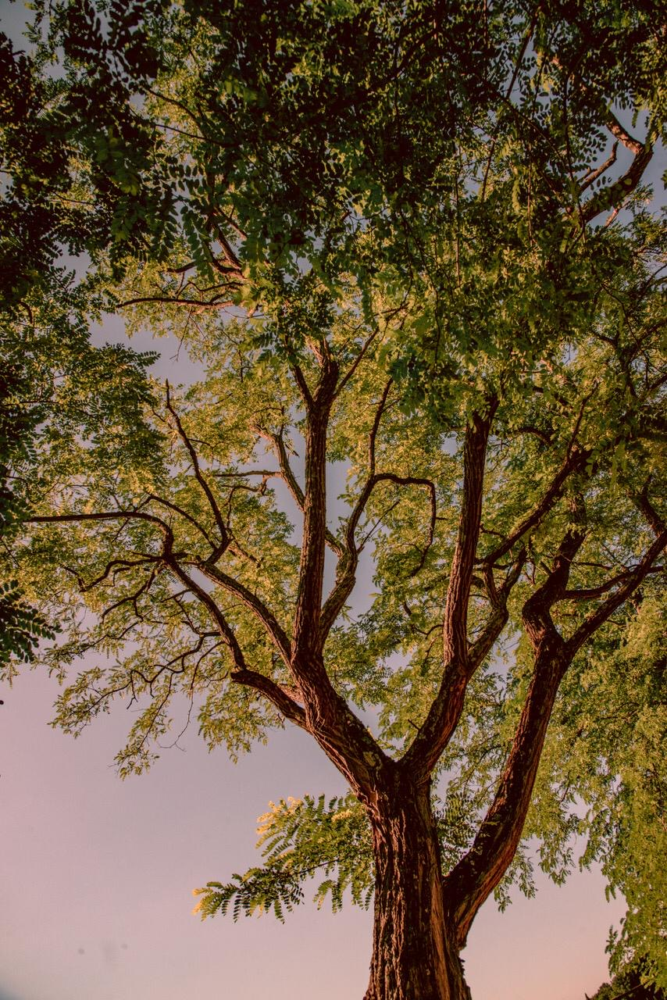
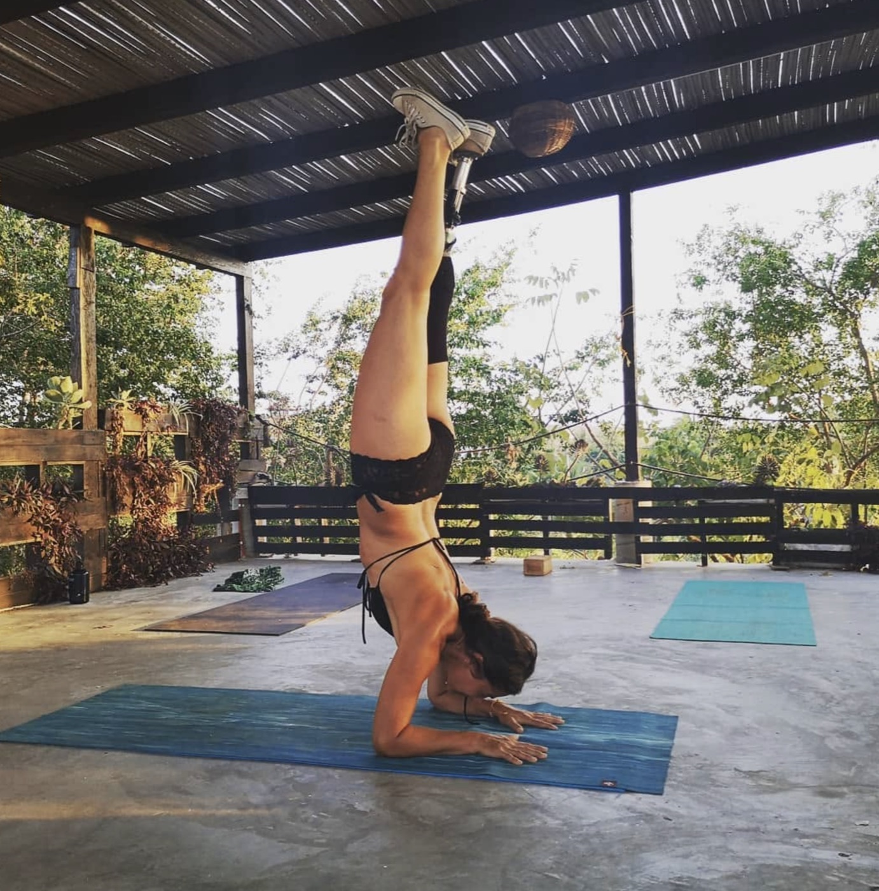
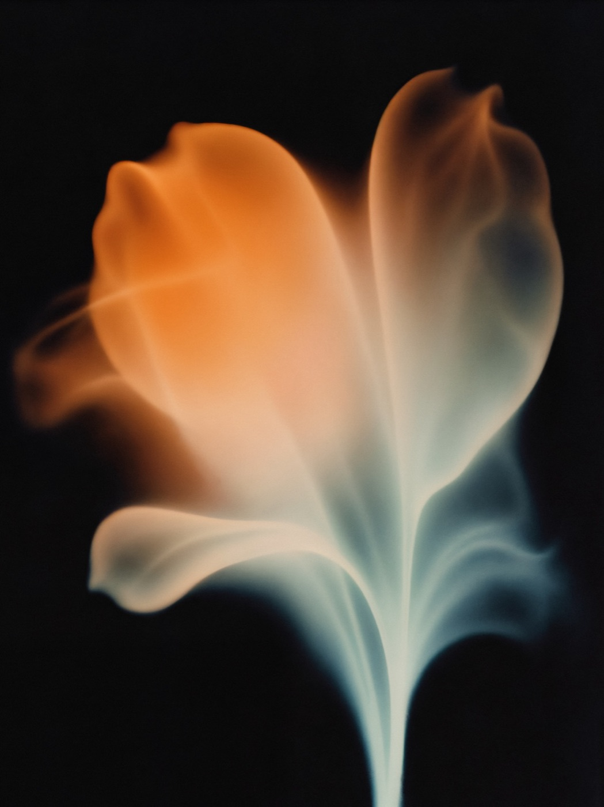
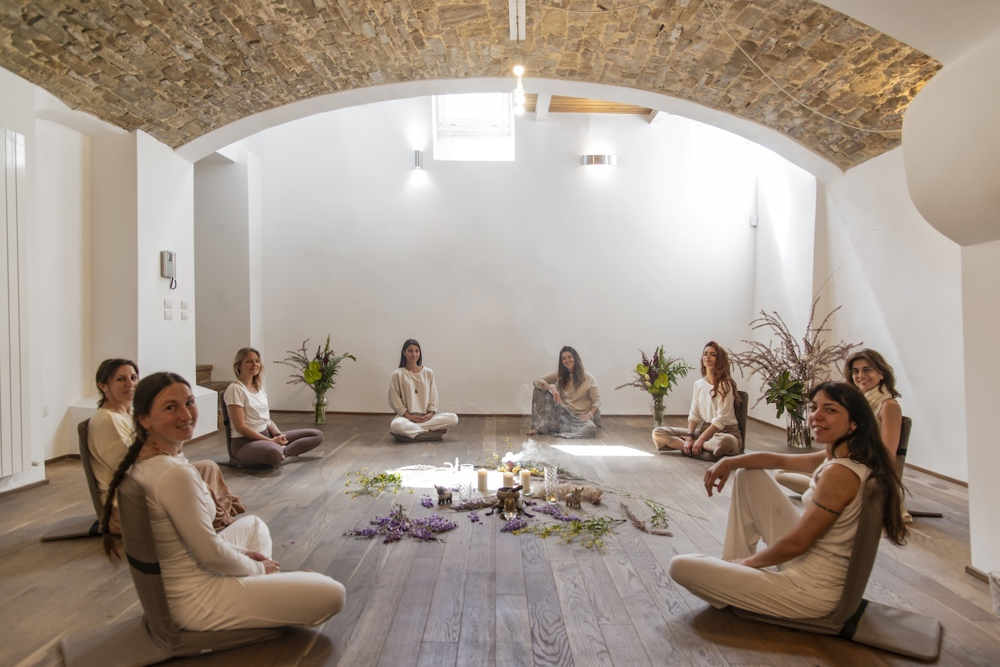
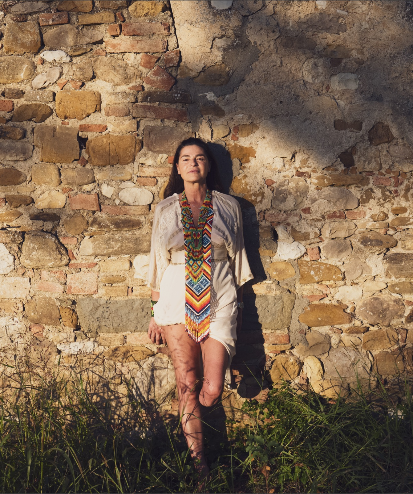

A scientist, and a student
I'm a scientist by training and a lifelong student of bowing my head down.
I earned my Master of Public Health and PhD in Infectious Diseases and Immunity from the University of California, Berkeley, where I developed a deep appreciation for rigorous science and its power to improve human lives. My early career took me to Brazil, working in public health, before I spent fifteen years at Novartis leading research in molecular epidemiology, collaborating with the World Health Organization, and publishing more than forty-five scientific papers.
Life, however, had another curriculum waiting for me.
A serious accident that resulted in the loss of my left leg became one of the greatest teachers of my life. It challenged everything I thought I understood about healing and opened the door to an entirely new way of seeing the human experience. My search for recovery led me beyond the western medical paradigm into breath, yoga, contemplative practice, and eventually the emerging field of psychedelic-assisted therapies.
Rather than choosing between science and spirituality, I discovered that the two can enrich one another. Today, my work lives at that intersection: bringing together evidence, embodied experience, curiosity, and compassion to support the process of healing that is both deeply human and scientifically grounded.
Whether I'm collaborating with researchers, teaching breathwork, training yoga teachers, or building educational initiatives through MAPS Italia, my intention is always the same: to create spaces where people can reconnect with themselves, with one another, and with the extraordinary capacity we all have to move through challenging circumstances.
I believe every one of us is
living a hero's journey.
Life inevitably brings challenges, loss, and uncertainty. Those experiences shape us, but they don't have to define us. Within every hardship lies the possibility of discovering a gift that can be shared with others.
To me, healing isn't about becoming someone new. It's about remembering who we already are beneath our conditioning, our fears, and the stories we've carried for years.
The greatest miracles I've witnessed are not supernatural, they are the natural expression of love, courage, presence, and genuine human connection.
When we transform our own suffering into wisdom and service, our lives become meaningful. When we care for one another and recognize that our wellbeing is inseparable from the wellbeing of our communities and our planet, healing extends far beyond the individual.
This belief is the thread that connects everything I do.

Three threads, one intention

Breathwork
Conscious Connected Breathwork, held with body awareness, nervous system regulation, sound and meditation. Facilitating since 2017.
read more
Inbodhi Yoga
Twenty-three years of teaching, and a Florence school with internationally recognised 200 - and 300 - hour Yoga Alliance teacher trainings.
read more
Psychedelic Research & Education
Co-founder and President of MAPS Italia Foundation ETS, advancing psychedelic medicine through science, education and collaboration.
read moreBreath has been one of
my greatest teachers
It's why I am here today.
I've been facilitating breathwork since 2017, beginning my training as a Group Leader in the Transformational Breath® lineage before evolving toward an integrative approach centered on Conscious Connected Breathwork.
My own experience of recovering after the loss of my leg profoundly shaped how I hold space today. I understand what it means to live in a body that has experienced trauma, pain, grief, and remarkable resilience.
My workshops combine conscious breathing with body awareness, nervous system regulation, sound, meditation, fresh herbal baths, and carefully curated practices that invite participants to reconnect with themselves in a safe and embodied way.
I don't see breathwork as a technique to fix people. I see it as a doorway.
It helps us soften protective patterns, access our innate intelligence, and rediscover the wholeness that has always been there.

Yoga has been my home for more than two decades
I've been teaching for over twenty-three years and have had the privilege of training hundreds of students and teachers. My journey began in San Francisco with the Rocket, through the It's Yoga system and its founder Larry Schultz. I've continued my studies in yoga philosophy, Vedic chanting with Menaka Desikachar, meditation, anatomy, and movement.
I founded Inbodhi Yoga Firenze in 2004 to create a school that honors both the depth of the yogic tradition and the realities of modern life. Today, our internationally recognized 200 - hour and 300 - hour Yoga Alliance teacher trainings have supported a generation of teachers in developing not only technical skill but authenticity, confidence, and presence.
My teaching has evolved alongside my own life. It is informed by science, trauma awareness, breathwork, and the profound lessons that come from living in an imperfect body.
Yoga is not about mastering difficult postures. It is a lifelong practice of coming home to ourselves, and finding comfort in the discomfort.

MAPS Italia
As co-founder and President of MAPS Italia Foundation ETS, I work to advance the responsible development of psychedelic medicine through science, education, and collaboration.
My role is to help build the ecosystem that allows these therapies to develop safely, ethically, and accessibly. I collaborate with clinicians, researchers, hospitals, universities, policymakers, and nonprofit organizations to strengthen education, research, and professional training across Italy and internationally.
Over the years I've organized scientific conferences, contributed to books and peer-reviewed publications, developed educational resources, translated training materials, and supported the implementation of the MAPS MDMA-Assisted Therapy Training Program in Italy. I also work closely with university hospitals to create the networks and infrastructure needed for the next generation of mental healthcare.
"Psychedelic" medicine is about much more than individual treatments.
It's about reimagining how we understand trauma, healing, connection, and human flourishing, and ensuring that this emerging field develops with scientific rigor, ethical integrity, and deep compassion.
Healing is about coming home to that which we are.
michèle anne barocchi
Come breathe
Workshops, teacher trainings, breathwork, research collaborations and speaking, write to me and I'll come back to you personally.
Based in Tuscany, Italy and San Francisco, CA, working in Florence, across Italy, and internationally.
write to michèle- emailinfo@micheleannebarocchi.com
- instagram@michele.anne.barocchi
- linkedinMichèle Anne Barocchi
- yogaInbodhi Yoga Firenze
- researchMAPS Italia
- based inTuscany, Italy & San Francisco, CA